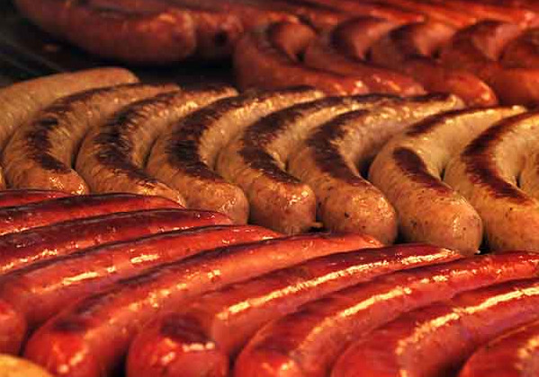

Discover delicious recipes and cooking tips to satisfy your culinary cravings.
Pelmeni are traditional Russian dumplings filled with meat. They are a beloved comfort food in Russia and are enjoyed by people all around the world. The dough is typically made from flour, water, and eggs, while the filling can consist of various types of meat such as pork, beef, or a combination of both. Pelmeni are usually boiled and served with sour cream or butter. They can also be fried for a crispy twist. This dish is perfect for a hearty meal and is sure to satisfy your taste buds!

Pizza is a beloved Italian dish consisting of a crispy crust topped with tomato sauce, cheese, and various toppings. It is a versatile meal that can be customized to suit any taste preference. Whether you prefer a classic Margherita or a loaded meat lovers pizza, there's a perfect slice for everyone.

Bratwurst are traditional German sausages made with pork, beef, or a combination of both. They are a popular comfort food in Germany and are often served with mustard, sauerkraut, or bread. These flavorful sausages are easy to cook and can be customized with various seasonings or spices.
